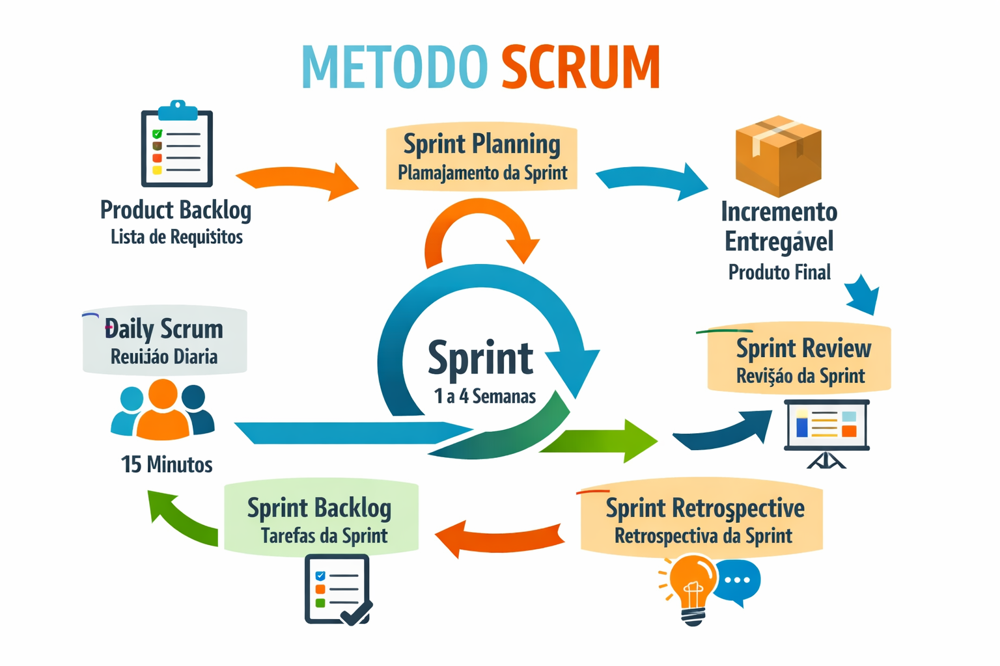

A engenharia de software fundamenta-se na aplicação de princípios técnicos e gerenciais para desenvolver, operar e manter sistemas de software com qualidade, eficiência e dentro do prazo. Baseia-se no ciclo de vida do software, incluindo requisitos, projeto, codificação, testes e manutenção.
Fundamentos e Pilares Principais: Processos de Software: Modelos (ex: Ágil, Cascata) que definem como as atividades de desenvolvimento são organizadas e executadas. Engenharia de Requisitos: Elicitação, análise, especificação e validação das necessidades do cliente. Design e Arquitetura: Estruturação lógica e física do software (ex: UML, Padrões de Projeto). Qualidade e Testes: Verificação (o software foi feito corretamente?) e Validação (foi feito o software correto?). Gerenciamento de Projeto: Planejamento, medição, monitoramento e controle para garantir o sucesso. Manutenção e Evolução: Atualização e correção de sistemas após a entrega.

O Scrum é um framework de gestão ágil focado na entrega incremental de valor, organizando o trabalho em ciclos curtos e iterativos chamados de sprints (geralmente de 2 a 4 semanas). Baseado na colaboração, transparência e inspeção, ele utiliza papéis definidos (Product Owner, Scrum Master, Time de Desenvolvimento) e eventos como Planning, Daily, Review e Retrospective para aumentar a produtividade e adaptação a mudanças.